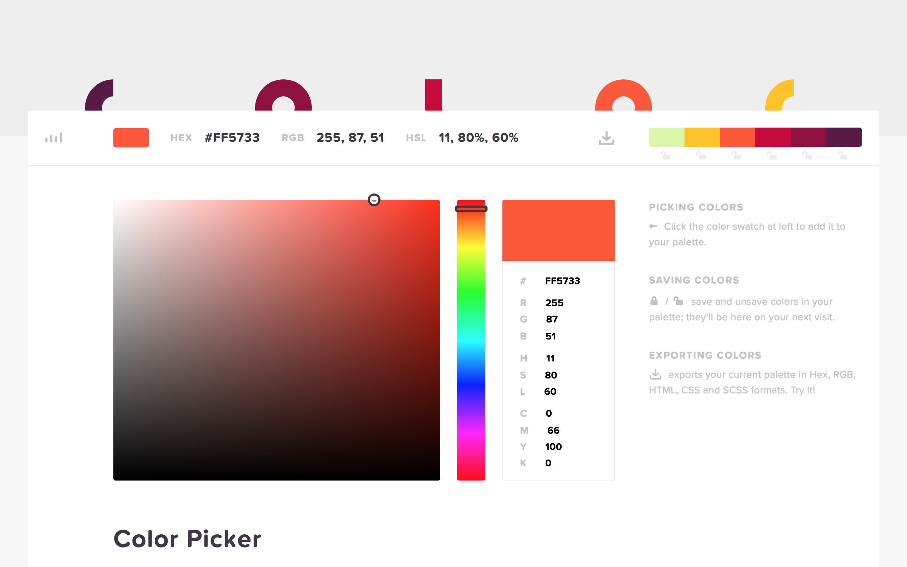

Using CSS
There are three main ways to implement CSS in your HTML file, these are in-line, internal and external.
| Pros | Cons | |
|---|---|---|
| In-line | Good for easily running changes to code | CSS must be implemented into every element |
| Internal | There is no need to load multiple files | Increases page loading time |
| External | Page may not be rendered correctly until CSS is loaded | Cleaner structure to code |
In-Line
In-line CSS utilises the <style> tag within the HTML file.
Internal
Internal CSS uses a similar format to external CSS, but is implemented within the HTML file, and is only functional when ../HTML/CSS.html<style type="text/css"> is written into the code.
External
External CSS is the most popular amongst coders, as it is as proffessional and efficient way to utilise code.
Colours
CSS can allow coders to add colour to a webpage, and can be done to various portions of a page, including <p>, <h1> and <body>.
The very simple CSS to achieve colour is shown here:
element {color: your choice;}
Notice how the CSS code will not function unless 'color' is in American spelling.
There are three main methods of acquiring a color on CSS, including the name (e.g. red), a hex color code, or an RGB value.
Hex Code
A popular way of getting specific and unique colours, Hex color codes can be found in various websites, such as the one below:

These colour codes, are a combination of letters and numbers, with a '#' to start the code.
RGB Value
RGB values are decided through (red, blue, green), where each colour has a level of intensity, with the maximum being 225.
For example, red in it's RGB value would be (225, 0, 0).
Borders
In CSS, there are multiple forms of borders including solid, dotted, dashed and double.
Borders are represented in CSS in the following way:
chosen element {border-style: dotted;}
SOLID
DOTTED
DASHED
DOUBLE
Fonts
In CSS, fonts can be altered through the 'Font Family' property. This is when there are many fonts, which are presented as the Fallback System. For example, if the browser that you are working on does not support the first font, it tries successive fonts, until it is compatible to your browser.
element {font-family: "Times New Roman", Times, serif;}
The above code would result in the following:
This is a 'Times New Roman' font
Padding
The CSS padding property allows for spacing around an elements content, within any defined border in the webpage.
There are four forms of padding, accounting for each side of a given element.
| Purpose | |
|---|---|
| padding | Creates space for all four sides |
| padding-top | Creates space for the top side |
| padding-right | Creates space for the right side |
| padding-bottom | Creates space for the bottom side |
| padding-left | Creates space for the left side |
Mainly represented in the values of '%' and 'px'.
The value 'px' shows the amount of pixels that is padded, '%' shows the percentage of the width holding the element.
Padding written in CSS, can dictate all four sides in one line of code, done in the following way:
element {padding: 25px 50px 100px 75px;}
Paired with a border (to show the padding effect), the following is the result of the above code:
An element with a top padding of 25px, a right padding of 50px, a bottom padding of 100px, and a left padding of 75px.
When padding has three values:
{padding: 10px 20px 30px;}
Top padding is 10px, right and left paddings are 20px, bottom padding is 30px.
When padding has two values:
{padding: 10px 20px;}
Top and bottom paddings is 10px, right and left paddings is 20px.
When padding has one value:
{padding: 10px;}
All four paddings are 10px.
Classing
In CSS and HTML, classing elements is a vital skill for coders to have, and allows only specified elements to be affected by CSS in a class.
When writing a class in CSS, you must write '.' before the class name, for the code to function.
An example is this:
.classname { }
The class function will not work until the HTML side is completed. This code looks like:
<element class="classname">contents</element>
Overview
In the CSS page you have learnt from above, the main topics that have been learnt are the main ways to implement CSS, common CSS tags to kickstart your website styling knowledge and classing elements.